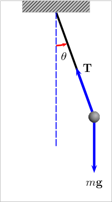
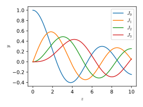
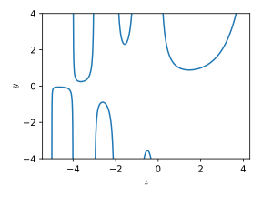

In the case of linear equations, we analyze the coefficients of the linear combination. Are these coefficients constant or functions of \(x\)?
\begin{align}
&a\frac{d^2 u}{d t^2} + b \frac{d u}{d t} + c u = 0 &\text{(Constant coefficients)}\\
&\frac{d}{dx}\left(x\frac{d w}{dx}\right) = -\omega^2 w &\text{(Variable coefficients)}
\end{align}
Examples: Free fall
In this case, gravity is the only force acting upon an object. The equation reads \[y'' =g = \text{const}\]
Examples: Parachute falling
This case is similar to the previous one, but there is air resistance (drag). The drag force is normally as a constant multiplied by the square of the speed \[m\frac{d^2 y}{dt^2} = mg - b\left(\frac{dy}{dt}\right)^2\]
Examples: Pendulum

A pendulum is a weight suspended from a pivot that can swing freely. The equation for a simple pendulum is
\[L\theta'' + g\sin\theta = 0\]
Power series solutions
Consider the second-order linear differential equation
\[a_0(z)f''(z)+a_1(z)f'(z)+a_2(z)f(z)=0\, ,\]
where \(a_0\) is nonzero for all \(z\), and \(a_1/a_0\) and \(a_2/a_0\) are analytic functions.
The power series method calls for the construction of a power series solution \[f=\sum_{k=0}^\infty A_kz^k\, ,\]
to find the form of the coefficients \(A_k\).
Power series solutions: Example 1
Consider the equation
\[y' = y\, .\]
Assuming \(y=\sum_{k=0}^\infty A_k z^k\), leads to
\[\sum_{k=1}^\infty[A_{k-1} - k A_k] z^k = 0\, ,\]
or
\[A_k = \frac{A_{k-1}}{k}\, .\]
Power series solutions: Example 2
Consider the (not so simple) equation
\[y'' - z y = 0\, .\]
Assuming \(y=\sum_{k=0}^\infty A_k z^k\), leads to
These series represent a group of special functions named Airy functions
\[y(z) = \mathrm{Ai}(z) + \mathrm{Bi}(z)\, ,\]
due to the British astronomer George Biddel Airy.
They appear in the solution of Scrödinger equation for a particle confined within a triangular potential. They are also important in microscopy and astronomy.
Power series solutions: A nonlinear example
The equation \(x' = 1 + x^2\), with initial condition \(x(0) = 0\), has the solution \(x = \tan(t)\). We could use the power series method, assuming \(x = \sum_{k=0}^\infty A_k t^k\), to obtain
And it appears frequently when solving problems in cylindrical or spherical coordinates. Particularly, when solving the temperature distribution of a circular plate or the vibration or a membrane.
They appear as the solution of Bessel equation for integer or positive \(\nu\).
For non-integer \(\nu\), the functions \(\mathrm{J}_\nu(z)\) and \(\mathrm{J}_{-\nu}(z)\) are linearly independent.

Gamma function
The gamma function is an extension of the factorial
\[\Gamma(n) = (n - 10)!\, .\]
The Gamma function is defined for all complex numbers except for non-positive integers. For complex numbers with a positive real part, it is defined via a convergent improper integral: \[\Gamma(z) = \int_{0}^{\infty} t^{z-1} e^{-t} \mathrm{d}t\, .\]

References
H. Hochstadt. Differential equations: a modern approach. Courier Dover Publications, 1975.
Erwin Kreyszig. Advanced engineering mathematics. John Wiley & Sons, 2010.
Dennis G. Zill. Ecuaciones diferenciales: con aplicaciones demodelado. Iternational Thomson Editores, 1997.